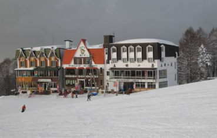

|
|||||||||||||||||||||||||||
|
|||||||||||||||||||||||||||
|
野沢スキー合宿 |
| 開 催 日 | ２００８年１月１４〜１６日 | |||
| リーダー | 川合 | |||
| 報 告 者 | 西田、高井（延）、岡田、 | |||
| 参加者数 | ２２名 （会員２０名、ゲスト２名） | |||
| アルパインスキークラブの野沢スキー合宿は、今回が１７年目になるという。 「成人の日」がハッピーマンデイ制になっても、「野沢の火祭り」の１５日は変わらないので、毎年１月１５日を中心に合宿は行なわれる。 この時期に合宿を行なう目的は、スキーなどの用具の点検・整備、用具の低温テスト（毛無山山頂は１６５０ｍで、−１０℃くらいになる）、体調・体力のチェック、スキーの基礎練習、約８ｋｍのロング滑降トレーニング、ということになる。 |
| スキー三昧 |
| ３日間は晴天に恵まれて、素晴らしい霧氷の中の滑降を楽しんだ。 |
| スカイライン滑降の前に勢ぞろい |
|  | A | |
| 昼食の時の集合地、上の平山荘は 民宿かじやの親戚で、サービス満点 |
ベルトコンベア「湯ロード」の乗り場に近い内田食堂は 帰るときの集合地、板と靴を預けて身軽になって帰る |
| 絶好の晴天に恵まれた毛無山頂上での記念写真 ばらばらに滑っていた全員が会合したのは全くの偶然！ |
| A | ||
| やまびこAコースは、無線塔の下から滑り出す | 見事な霧氷を背景にご満悦の川合リーダー |
| ブロードバンド環境の方は、 上の写真をクリックして、滑降のビデオをご覧下さい ホームページ掲載のため圧縮していますので、画質の悪い点は、ご容赦下さい |
| 美酒三昧 |
| スキーの後の温泉は格別、その後の美酒は最高に格別である。 |
| A |  |
|
| 民宿かじやは、毎度ながら、 女将の手料理で大満足！ |
野沢温泉自慢の外湯の１つ「熊の手洗場」は 「かじや」から、サンダル掛けで小走り２０秒！ |
| A | ||
| 美女に挟まれた川合リーダーと宮本代表 | 昨年喜寿を迎えられた川合リーダーのお祝いの席となった |
| 火祭り三昧 |
| 「日本の三大火祭り」の１つといわれる野沢温泉の火祭りは、正式には「道祖神祭り」と呼ばれる。 祭りが行なわれる場所にある碑に天保十巳亥年（１８３９年）と彫られているので、星霜を重ねること１７０年。 この祭りは、４２歳と２５歳の厄年の男衆が中心となり、野沢独特の社殿（木造の櫓）を建てる。 前年に男子（今年は、河野快成君と片桐果門君）を出産した家では感謝の意と子の成長を祈願して燈篭（傘鉾）を奉納する。 そして火元の家で古式にのっとり採火された火は松明に移され、神殿を守る厄年の男たちと攻める村人たちの間で男らしい荒っぽい壮絶な攻防戦が約1時間半続く。 社殿に火を入れ、激しく燃える火が最高潮に達したとき、燈篭も燃やして火祭りが終わる。 この祭りは、平成６年５月に文化庁より重要無形民俗文化財に指定された。 何よりも、一部始終を撮影した下記のビデオをご覧下さい |
| ブロードバンド環境の方は、 上の写真をクリックして、火祭りのビデオをご覧下さい ホームページ掲載のため圧縮していますので、画質の悪い点は、ご容赦下さい |
| 滑降中の写真やビデオをお持ちの方はご提供下さい。頁を補強したいと思います。 |